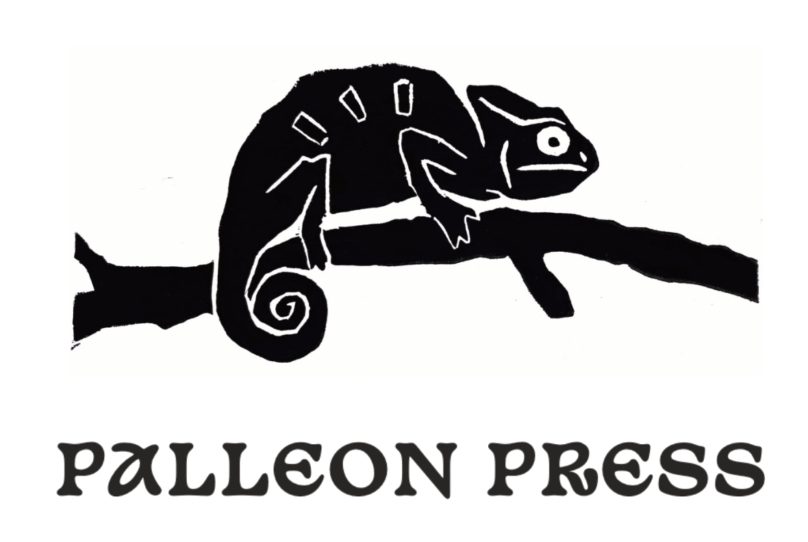

Perils & Pathways SRD
TABLE OF CONTENTS
Table of Contents
Perils & Pathways SRDTable of ContentsWhat You NeedHow To Play1) Choose Roles.The HeroThe Teller2) The Prize.3) The Big Bads.4) Shuffle.5) Pathways.6) Perils.7) Gifts.8) Playing the Peril.9) Repeat.10) Showdown.Dungeon Playsheet1.A. Archetypes 1.B. Skills 1.C. Prizes2.A. Big Bads 2.B. Peril Types3.A. Useful Items3.B. Healing Gifts ♥3.C. Trap Perils ♣3.D. Monster Perils ♦3.E. Intrigue Perils ♠
OVERVIEW
## OverviewA maze of mysteries, monsters, and traps (oh my!) leads to a marvelous prize...
Perils & Pathways is a two-player, mini-adventure game that fits right in your pocket, using standard playing cards and a single six-sided die.
One player ventures into the maze. The other sees what lies ahead. The first plays the role of THE HERO, who must take risks, collect useful items, and learn from every challenge. The second plays THE TELLER, THE HERO's eyes, ears, and nose, who must guide their friend through danger. Only together can they navigate each twisting PATHWAY, pass each terrible PERIL, and receive the coveted PRIZE!
What You Need
Two players
60-90 minutes
A deck of 54 standard playing cards (jokers included)
One six-sided die
A Perils & Pathways playsheet
The starter DUNGEON playsheet is included at the end of this document. Find more playsheets at INSERT LINK HERE.
HOW TO PLAY
How To Play
1) Choose Roles.
Decide who will play each role below, or flip a coin.
The Hero
Navigates through the maze to claim THE PRIZE at the end. Chooses an ARCHETYPE from Playsheet-1.A., taking the corresponding four cards from the deck. These cards are their level in each SKILL (Playsheet-1.B.).
The Teller
Mediates between THE HERO and the game world. Describes PATHWAYS, PERILS, and consequences. They know what is around each corner, and must improvise details to help the other player make informed decisions about where to go. Shuffles and deals all cards. Should read the playsheet and all rules.
2) The Prize.
Place the A♥︎ face-down.This is THE PRIZE. Decide together what THE HERO is searching for. Look to Playsheet-1.C. for ideas, or make up your own.
3) The Big Bads.
Shuffle the A♦, A♣, and A♠ and place them face-down on top of the A♥. These are THE BIG BADS (Playsheet-2.A.), the final and most dangerous guardians of THE PRIZE. THE HERO will eventually face all three. If they improve their skills and equipment in time, they just might survive.
4) Shuffle.
Shuffle the remaining cards and place them face-down on the stack of aces.
5) Pathways.
THE TELLER looks at the top two cards (or pick up three at a time for a quicker game), then places them face-down before THE HERO. The back of each card represents a PATHWAY, left, right, or straight (if using three cards).
THE HERO chooses which direction to take. To help them choose, THE TELLER describes a detailed PATHWAY for each card. THE TELLER should base their description on the PERIL that THE HERO will face if they choose that direction (see Step 6, but they must not give the PERIL away outright.
Ex. A stone door in the shape of a tombstone… (behind which waits a skeleton army)
The first set of PATHWAYS can only be described with images, the second only with sound, and the third only with smell. Repeat this pattern for the remaining PATHWAYS.
6) Perils.
THE HERO chooses a path and flips that card, revealing the PERIL.The suit tells you the SKILL needed to pass it (Playsheet-2.B.). The value tells its difficulty.
Ex. A 9♣ will be a test of agility with a difficulty of 9
THE TELLER describes the PERIL. Come up with your own idea or reference Playsheets-3.A-E for inspiration.
7) Gifts.
The flipped card may secretly be a GIFT in disguise. A️ HEALING GIFT ♥ is treated like a PERIL card, but poses no danger and grants THE HERO +1♥ (i.e. +1 health point) if they currently have less than 3♥ (Playsheet-3.B).
Face cards and jokers are USEFUL ITEMS that THE HERO may use once at a later point (Playsheet-3.A).
8) Playing the Peril.
If THE HERO’s SKILL LEVEL is > the PERIL’s difficulty, they pass safely thru without gaining a new SKILL LEVEL.
If not, THE HERO rolls a die and creatively describes how they attempt to pass. Before rolling, THE HERO may channel one additional SKILL and use any USEFUL ITEMS in their plan.
If THE TELLER finds this plan convincing, they may choose to add +1 to the die roll for each of these skill/item bonuses. If they find the plan especially impressive, they can even let THE HERO roll their die twice and use the higher result.
If the final total (die result + all bonuses) is greater than the PERIL's difficulty, THE HERO succeeds. Tuck the defeated PERIL card behind THE HERO's matching SKILL card. This grants +1 LEVEL in that SKILL.
Ex. Our HERO, a Magician, turns a corner and encounters a rancid, hungry cave-troll blocking their path. THE HERO only has a 2♦, or strength LEVEL 2, which is not enough to defeat the 8♦ troll in direct combat.
THE HERO needs to improvise a plan. They decide to look up the troll's weakness in their tome of lore, and then use their magic skill to target this weakness with spells. For added flair, they specify that the troll's weakness is fire and that they cast a fireball spell, throwing in their grease item to ensure the flames will catch.
THE TELLER likes this plan, and awards THE HERO a +3 bonus (+1 for using the tome item, +1 for using the grease item, and +1 for using their magic skill). THE TELLER also tells THE HERO to roll twice and keep the higher result, as they really like the fire weakness detail.
THE HERO rolls a six-sided die and scores a 2. 2+3=5... not enough. They roll again and score a 5. 5+3=8!
THE HERO has successfully vanquished the troll. They place the defeated 8♦ card underneath their 2♦-- they know have a 3♦ strength level. They discard the used items (the tome and the grease) and continue, deeper into the maze.
If the total is still less than difficulty, tuck the PERIL card behind THE HERO's ♥ card instead, marking -1♥ (or health point). If THE HERO ever reaches 0♥, they lose all their ITEMS and half their gained SKILL LEVELS. Shuffle some of these cards back into the stack, above THE BIG BADS. Discard the rest.
9) Repeat.
Each PERIL is resolved only once, whether THE HERO passes or fails. Any cards not given to THE HERO (a.k.a ITEMS and gained SKILL LEVELS) stay on the table, right where THE TELLER placed them.
Draw and play until only four cards remain in the starting stack.
10) Showdown.
Draw the top three cards (THE BIG BADS). Treat them as PERILS, describing a PATHWAY for THE HERO to choose. THE HERO must beat a difficulty of 11 in the card’s SKILL. All other PERIL rules apply.
Repeat for all three BIG BADS.
If THE HERO survives, they have won the labyrinth and earned the PRIZE!
DUNGEON PLAYSHEET
Dungeon Playsheet
1.A. Archetypes
| Thief Skill Levels | Warrior Skill Levels | Magician Skill Levels |
|---|---|---|
| 3♥ | 3♥ | 3♥ |
| 5♣ | 3♣ | 2♣ |
| 2♦ | 5♦ | 2♦ |
| 3♠ | 2♠ | 5♠ |
1.B. Skills
| Suit | Skill |
|---|---|
| ♥ | Health, fortitude, courage |
| ♣ | Agility, speed, sharpness |
| ♦ | Strength, prowess, defense |
| ♠ | Willpower, charisma, magic |
1.C. Prizes
| d6 | Prize |
|---|---|
| 1 | Buried treasure |
| 2 | Goblet of immortality |
| 3 | Long lost love |
| 4 | Ticking doomsday device |
| 5 | Entrance to paradise |
| 6 | The perfect sandwich |
2.A. Big Bads
| Card | Big Bad |
|---|---|
| A♣ | Leap into the void |
| A♦ | Three-headed dragon |
| A♠ | Evil Enchanter |
2.B. Peril Types
| Suit | Type |
|---|---|
| ♥ | Healing |
| ♣ | Traps |
| ♦ | Monsters |
| ♠ | Intrigue |
3.A. Useful Items
+1 to Peril roll for an item that is used creatively. Discard after use.
| Card | Item | Card | Item |
|---|---|---|---|
| J♥ | Harp | J♦ | Chisel |
| Q♥ | Shield | Q♦ | Bow |
| K♥ | Philosopher's stone | K♦ | Magic sword |
| J♣ | Grease | J♠ | Tome of lore |
| Q♣ | Night goggles | Q♠ | Spell of illusion |
| K♣ | Magic carpet | K♠ | Diadem of invisibility |
| Red Joker | Golden thread (backtrack thru cards instead of +1 bonus) | Black Joker | Crystal ball (peek at next cards instead of +1 bonu) |
3.B. Healing Gifts ♥
| Card | Gift |
|---|---|
| 2♥ | A barrel of apples |
| 4♥ | A health potion |
| 5♥ | A warm, inviting inn |
| 6♥ | A good spot to camp |
| 7♥ | Run into an old friend |
| 8♥ | A doctor's office |
| 9♥ | A fountain of healing |
| 10♥ | A visit from a deity |
3.C. Trap Perils ♣
| Card | Peril |
|---|---|
| 2♣ | Statues spitting poison darts |
| 3♣ | A pit of spikes |
| 4♣ | Constricting vines |
| 5♣ | Whirring saw blades |
| 6♣ | Shooting fireballs |
| 7♣ | Swinging aces |
| 8♣ | Compacting walls |
| 9♣ | A huge rolling boulder |
| 10♣ | The floor is lava |
3.D. Monster Perils ♦
| Card | Peril |
|---|---|
| 2♦ | A plague of rodents |
| 3♦ | Skeleton warriors |
| 4♦ | Goblin bandits |
| 5♦ | A giant crocodile |
| 6♦ | A man-eating worm |
| 7♦ | A band of marauders |
| 8♦ | A cave troll |
| 9♦ | A young dragon |
| 10♦ | A lich king |
3.E. Intrigue Perils ♠
| Card | Peril |
|---|---|
| 2♠ | Stone guardians who won't budge |
| 3♠ | An array of colored potions |
| 4♠ | A hall of mirrors |
| 5♠ | A fellow treasure-seeker, lost, delirious |
| 6♠ | An infinite library of flying books |
| 7♠ | Competitive, sabotaging miners |
| 8♠ | A sphinx giving riddles |
| 9♠ | An ever-moving maze |
| 10♠ | A goblin arena chanting "encore!" |
